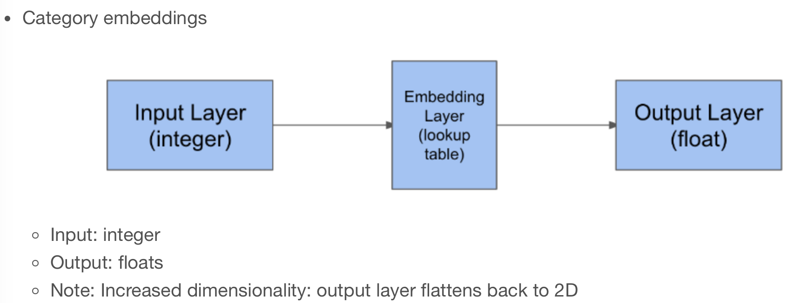

Code
import tensorflow as tf
import numpy as np
import pandas as pd
import matplotlib.pyplot as plt
plt.rcParams['figure.figsize'] = (10, 8)
Shared layers allow a model to use the same weight matrix for multiple steps. In this exercise, you will build a “team strength” layer that represents each team by a single number. You will use this number for both teams in the model. The model will learn a number for each team that works well both when the team is team_1 and when the team is team_2 in the input data.
games_season = pd.read_csv('dataset/games_season.csv')
games_season.head()| season | team_1 | team_2 | home | score_diff | score_1 | score_2 | won | |
|---|---|---|---|---|---|---|---|---|
| 0 | 1985 | 3745 | 6664 | 0 | 17 | 81 | 64 | 1 |
| 1 | 1985 | 126 | 7493 | 1 | 7 | 77 | 70 | 1 |
| 2 | 1985 | 288 | 3593 | 1 | 7 | 63 | 56 | 1 |
| 3 | 1985 | 1846 | 9881 | 1 | 16 | 70 | 54 | 1 |
| 4 | 1985 | 2675 | 10298 | 1 | 12 | 86 | 74 | 1 |
from tensorflow.keras.layers import Embedding
# Count the unique number of teams
n_teams = np.unique(games_season['team_1']).shape[0]
# Create an embedding layer
team_lookup = Embedding(input_dim=n_teams,
output_dim=1,
input_length=1,
name='Team-Strength')The team strength lookup has three components: an input, an embedding layer, and a flatten layer that creates the output.
If you wrap these three layers in a model with an input and output, you can re-use that stack of three layers at multiple places.
Note again that the weights for all three layers will be shared everywhere we use them.
from tensorflow.keras.layers import Input, Flatten
from tensorflow.keras.models import Model
# Create an input layer for the team ID
teamid_in = Input(shape=(1, ))
# Lookup the input in the team strength embedding layer
strength_lookup = team_lookup(teamid_in)
# Flatten the output
strength_lookup_flat = Flatten()(strength_lookup)
# Combine the operations into a single, re-usable model
team_strength_model = Model(teamid_in, strength_lookup_flat, name='Team-Strength-Model')Metal device set to: Apple M2 ProNow that you have your two inputs (team id 1 and team id 2) and output (score difference), you can wrap them up in a model so you can use it later for fitting to data and evaluating on new data
model = Model([team_in_1, team_in_2], score_diff)
# Compile the model
model.compile(optimizer='adam', loss='mean_absolute_error')from tensorflow.keras.utils import plot_model
plot_model(model, to_file='Images/embedding_shared_merge_model.png')
data = plt.imread('Images/embedding_shared_merge_model.png')
plt.imshow(data);
Fit the model to the regular season training data Now that you’ve defined a complete team strength model, you can fit it to the basketball data! Since your model has two inputs now, you need to pass the input data as a list.
input_1 = games_season['team_1']
# Get the team_2 column from the regular season data
input_2 = games_season['team_2']
# Fit the model to input 1 and 2, using score diff as a target
model.fit([input_1, input_2], games_season['score_diff'], epochs=1, batch_size=2048, validation_split=0.1, verbose=True);138/138 [==============================] - 1s 6ms/step - loss: 12.0968 - val_loss: 11.8210In this exercise, you will evaluate the model on this new dataset. This evaluation will tell you how well you can predict the tournament games, based on a model trained with the regular season data. This is interesting because many teams play each other in the tournament that did not play in the regular season, so this is a very good check that your model is not overfitting.
games_tourney = pd.read_csv('dataset/games_tourney.csv')
games_tourney.head()| season | team_1 | team_2 | home | seed_diff | score_diff | score_1 | score_2 | won | |
|---|---|---|---|---|---|---|---|---|---|
| 0 | 1985 | 288 | 73 | 0 | -3 | -9 | 41 | 50 | 0 |
| 1 | 1985 | 5929 | 73 | 0 | 4 | 6 | 61 | 55 | 1 |
| 2 | 1985 | 9884 | 73 | 0 | 5 | -4 | 59 | 63 | 0 |
| 3 | 1985 | 73 | 288 | 0 | 3 | 9 | 50 | 41 | 1 |
| 4 | 1985 | 3920 | 410 | 0 | 1 | -9 | 54 | 63 | 0 |
input_1 = games_tourney['team_1']
# Get team_2 from the tournament data
input_2 = games_tourney['team_2']
# Evaluate the model using these inputs
print(model.evaluate([input_1, input_2], games_tourney['score_diff'], verbose=False))11.673151016235352